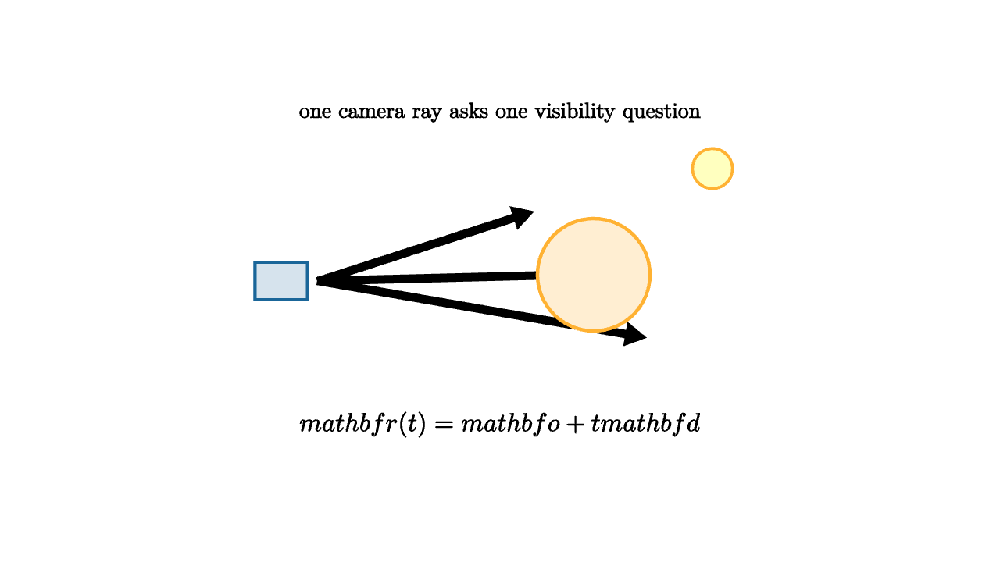

Ray Tracing Follows Light Backward
In the physical world, light leaves sources, bounces through a scene, and some tiny fraction reaches your eye. A renderer has a harder accounting problem: most emitted rays never hit the camera. Ray tracing reverses the search. For each pixel, send a ray from the camera into the scene and ask what it hits.
A ray has an origin $\mathbf o$ and a direction $\mathbf d$:
The nearest positive intersection determines the visible surface for that pixel. Once the hit point is known, the renderer can ask lighting questions: where is the light, what is the surface normal, is the light blocked, and how reflective is the material?

source
let soft = |col, amount| lerp(WHITE, col, amount)
mesh diagram = [
center{1.75l} fill{soft(BLUE, 0.18)} stroke{BLUE, 2.4} Rect([0.42, 0.3]),
stroke{BLACK, 2.4} Arrow(1.45l, 0.25r + 0.55u),
stroke{BLACK, 2.4} Arrow(1.45l, 0.55r + 0.05u),
stroke{BLACK, 2.4} Arrow(1.45l, 1.15r + 0.45d),
center{0.75r + 0.05u} fill{soft(ORANGE, 0.22)} stroke{ORANGE, 2.6} Circle(0.45),
center{1.7r + 0.9u} fill{soft(YELLOW, 0.25)} stroke{ORANGE, 2.2} Circle(0.16),
center{1.35u} Text("one camera ray asks one visibility question", 0.62),
center{1.15d} Tex("\\mathbf r(t)=\\mathbf o+t\\mathbf d", 0.74)
]The simplest intersection problem is a sphere. If the sphere has center $\mathbf c$ and radius $R$, substitute the ray into
That gives
a quadratic equation in $t$. Its smallest positive root is the first place the ray hits the sphere. A negative root lies behind the camera. No real roots means the ray misses.
source
camera = Camera([3.0, -3.4, 2.0], [0, 0, 0.35], [0, 0, 1])
let soft = |col, amount| lerp(WHITE, col, amount)
"Scene"
mesh scene = [
center{[-1.4, -0.65, 0.25]} fill{soft(BLUE, 0.18)} stroke{BLUE, 2.4} Rect([0.58, 0.42]),
center{[0.25, 0.15, 0.3]} fill{soft(ORANGE, 0.2)} stroke{ORANGE, 2.0} Sphere(0.38, 2),
center{[1.15, 0.75, 1.05]} fill{soft(YELLOW, 0.25)} stroke{ORANGE, 2.0} Sphere(0.12, 1),
center{[0, 0, 1.25]} orient_to_camera{camera} Text("camera rays travel into the scene", 0.62)
]
play Fade(0.8)
"Ray"
scene = [
scene,
stroke{BLACK, 3} Arrow([-1.4, -0.65, 0.25], [0.02, 0.06, 0.3]),
center{[0, 0, 1.25]} orient_to_camera{camera} Text("nearest positive hit wins the pixel", 0.62)
]
play Fade(0.8)
"View"
camera = Camera([2.2, -1.2, 1.35], [0, 0, 0.35], [0, 0, 1])
play CameraLerp(&camera, 1.3)Ray tracing is naturally recursive. A mirror hit spawns a reflection ray. A glass surface spawns a refracted ray. A shadow test sends a ray from the hit point toward the light to check whether something blocks it. Global illumination methods sample many paths to estimate indirect light bouncing through the scene.
This gives ray tracing its visual strength. Reflection, refraction, soft shadows, glossy materials, and ambient occlusion can all be phrased as ray questions. The cost is that many rays may be needed for a clean image. Modern renderers combine acceleration structures, sampling strategies, denoising, and hardware support to make those questions affordable.
Acceleration is geometry again. A scene may contain millions of triangles. Testing every ray against every triangle would be too slow. Bounding volume hierarchies group nearby triangles inside boxes. A ray first tests large boxes, then smaller boxes, then individual triangles only when needed. The renderer spends most of its time asking, "which pieces could this ray possibly hit?"
Triangle hits
Most rendered scenes are made of triangles, so ray-triangle intersection is central. One common method solves
The left side is the ray. The right side is a point in the triangle using two barycentric-like coordinates. A valid hit has
This single system answers both questions at once: where the ray meets the triangle's plane, and whether that meeting point lies inside the triangle.
After the hit, barycentric coordinates interpolate normals, texture coordinates, and material data. That connects ray tracing to the earlier rasterization lessons. The visibility search changes, while triangle data is still blended across the surface.
Sampling and noise
One ray per pixel gives sharp visibility for ideal pinhole cameras, but realistic images need more samples. Soft shadows require sampling an area light. Glossy reflections require sampling many reflection directions. Depth of field requires sampling points on a lens. Motion blur requires sampling time.
Each sample is a random or carefully distributed estimate of light transport. Too few samples create noise. More samples reduce noise, roughly like
That slow square-root improvement is why denoising and good sampling patterns matter. A physically based renderer is partly a geometry engine and partly a probability engine.
Local shading after visibility
The ray only finds a surface point. The color comes from a shading model. A basic matte surface asks how the normal aligns with the light. A mirror asks for the reflected direction. A glass surface asks for refraction and Fresnel reflection. A rough surface samples a lobe of directions.
The structure is recursive and local: find a hit, evaluate material behavior, send more rays when the material asks for more information. Beautiful global effects arise because many local ray questions are chained together.
Ray tracing is called backward because rays start at the camera. Conceptually, it is a disciplined visibility search. Choose a pixel, build a ray, find the closest hit, evaluate light, and repeat until the image is filled.